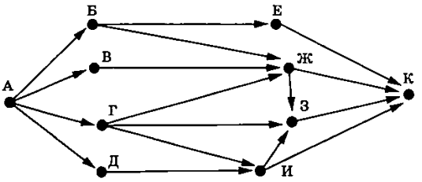

Информатика ОГЭ 2025 года содержит 16 заданий, то есть работа состоит из двух частей. Первая часть содержит 10 заданий с краткими ответами, во второй части 6 заданий, которые необходимо выполнить на компьютере.
С 1 по 12 ответы необходимо перенести на БЛАНК ОТВЕТОВ № 1.
C 13 по 16 необходимо выполнить на компьютере, результатами выполнения заданий являются отдельные файлы. Имя файла которого сохранили необходимо перенести на БЛАНК ОТВЕТОВ № 2.
| Номер задания | Максимальный балл |
| № 1-12 | 1 |
| № 13 | 2 |
| № 14 | 3 |
| № 15 | 2 |
| № 16 | 2 |
| Баллы | Оценка |
| 0-4 | 2 |
| 5-10 | 3 |
| 11-15 | 4 |
| 16-21 | 5 |
1. В одной из кодировок Unicode каждый символ кодируется 32 битами. При подготовке сообщения по геологии Миша написал текст (в нём нет лишних пробелов):
«Россия богата полезными ископаемыми. На территории Российской Федерации найдены и добывают такие полезные ископаемые, как газ, нефть, уголь, никель, кобальт, марганец и многие другие».
Затем Миша удалил из списка название одного их полезных ископаемых, а также лишние запятую и пробел — два пробела не должны идти подряд. При этом размер нового предложения в данной кодировке оказался на 36 байт меньше, чем размер исходного предложения. Напишите в ответе название удалённого полезного ископаемого.
2. От разведчика было получено сообщение:
00011001110110101000101
В этом сообщении зашифрован пароль - последовательность русских букв. В пароле использовались только буквы Б, В, Е, Й, О, Р; каждая буква кодировалась двоичным словом по следующей таблице.
| Б | В | Е | Й | О | Р |
| 1 | 00 | 0100 | 0101 | 0110 | 0111 |
Расшифруйте сообщение. Запишите в ответе пароль.
3. Напишите наименьшее натуральное число x, для которого ложно высказывание:
НЕ(x кратно 8) ИЛИ (x < 405)
4. Между населёнными пунктами A, B, C, D, E построены дороги, протяжённость которых (в километрах) приведена в таблице.
| A | B | C | D | E | |
| A | 15 | 13 | 7 | ||
| B | 15 | 3 | |||
| C | 13 | 3 | 2 | 5 | |
| D | 2 | 2 | |||
| E | 7 | 5 | 2 |
Определите длину кратчайшего пути между пунктами A и B. Передвигаться можно только по дорогам, указанным в таблице. Каждый пункт можно посетить только один раз.
5. У исполнителя Омега две команды, которым присвоены номера:
1. раздели на 4
2. вычти 2
Первая из них уменьшает число на экране в 4 раза, вторая уменьшает его на 2.
Составьте алгоритм получения из числа 500 числа 29, содержащий не более 5 команд.
В ответе запишите только номера команд.
(Например, 12211 - это алгоритм:
раздели на 4
вычти 2
вычти 2
раздели на 4
раздели на 4
который преобразует число 144 в 2.).
Если таких алгоритмов более одного, то запишите любой из них.
6. Ниже приведена программа, записанная на пяти языках программирования.
| Бейсик | Алгоритмический язык | Паскаль |
|
DIM t, s AS INTEGER INPUT s INPUT t IF s >= 60 AND t > 80 THEN PRINT "YES" ELSE PRINT "NO" END IF |
var s, t: integer; begin readln(s); readln(t); if s >= 60 и t > 80 then writeln ('YES') else writeln ('NO') end. |
алг нач цел s, t ввод s ввод t если (s >= 60) AND (t > 80) то вывод "YES" иначе вывод "NO" все кон |
| С++ | Python | |
|
#include using namespace std; int main() { int s, t; cin >> s; cin >> t; if (s >= 60 && t > 80) cout << "YES"; else cout << "NO"; return 0;} |
s = int(input()) t = int(input()) if s >= 60 and t > 80: print("YES") else: print("NO") |
|
Было проведено 10 запусков программы, при которых в качестве значений переменных s и t вводились следующие пары чисел вида (s, t):
(-20, 2); (-9, 85); (0, 29); (0, 77); (44, -4); (44, 105); (60, 60); (60, 80); (66, 200); (200, 100).
Сколько было запусков, при которых программа напечатала «YES»?
7. Доступ к файлу с именем ftp и расширением rtf, находящемуся на сервере myfilebox.ru, осуществляется по протоколу http. Фрагменты адреса файла закодированы цифрами от 1 до 7. Запишите последовательность этих цифр, кодирующую адрес указанного файла в сети Интернет.
1) ://
2) ftp
3) .rtf
4) .ru
5) myfilebox
6) /
7) http
8. В языке запросов поискового сервера для обозначения логической операции «ИЛИ» используется символ «|», а для логической операции «И» – символ «&». В таблице приведены запросы и количество найденных по ним страниц некоторого сегмента сети Интернет.
| Запрос | Найдено страниц (в тысячах) |
| Фильм & (Война | Мир) | 282 |
| Фильм & Война | 207 |
| Фильм & Мир | 170 |
Какое количество страниц (в тысячах) будет найдено по запросу Фильм & Война & Мир?
Считается, что все запросы выполнялись практически одновременно, так что набор страниц, содержащих все искомые слова, не изменялся за время выполнения запросов.
9. На рисунке – схема дорог, связывающих города А, Б, В, Г, Д, Е, Ж, З, И и К. По каждой дороге можно двигаться только в одном направлении, указанном стрелкой. Сколько существует различных путей из города А в город К?

10.Вычислите значение арифметического выражения:
(11001102 + 1116) • 108
В ответе запишите десятичное число, основание системы счисления указывать не нужно.
11.
В романе И. А. Гончарова «Обломов», текст которого приведён в подкаталоге
каталога Проза, читателю становится известно, что герой отправил нужную бумагу
вместо Астрахани в другой город.
С помощью поисковых средств операционной
системы и текстового редактора или браузера выясните название этого города.
 Скачать файл
Скачать файл12. Сколько файлов с расширением .htm содержится в подкаталогах каталога Классика/Стихи? В ответе укажите только число.